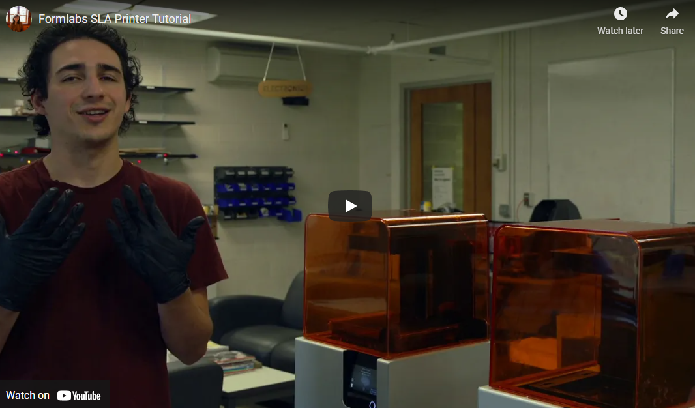
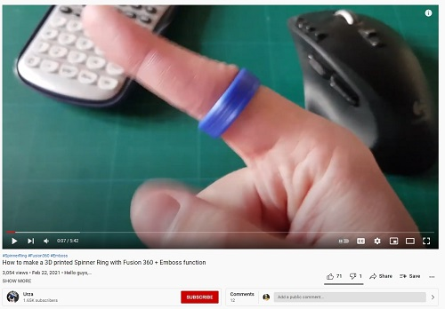
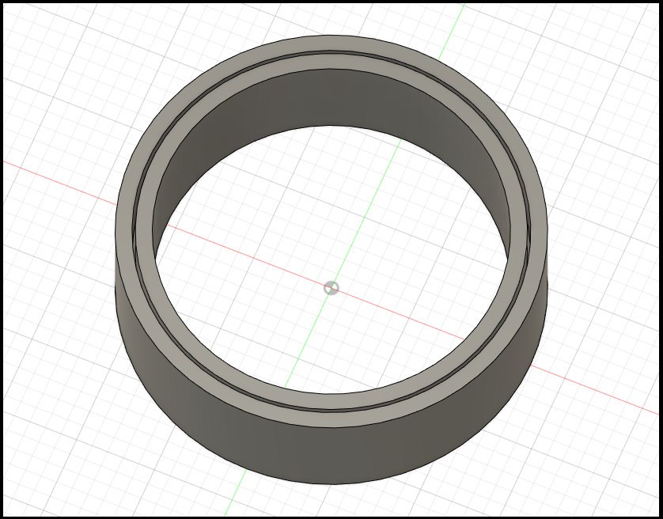
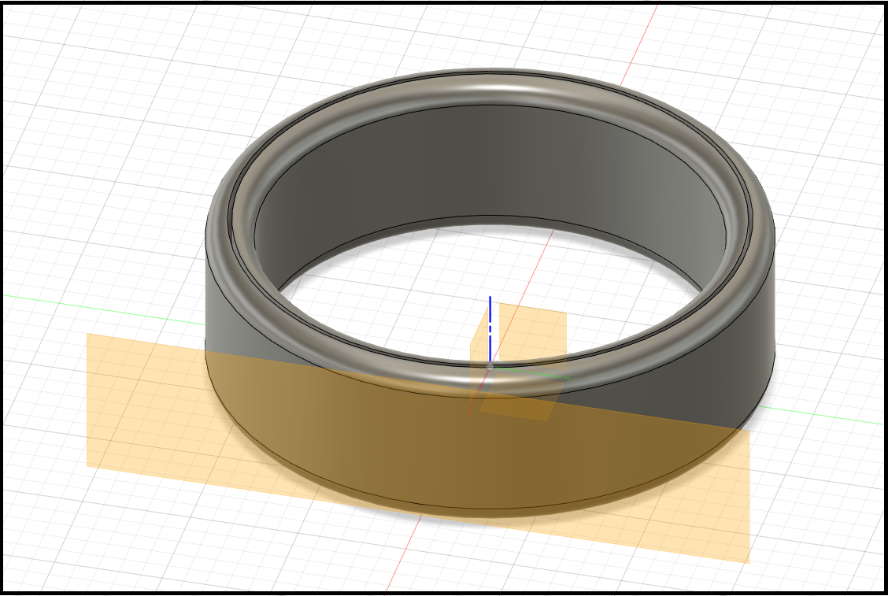
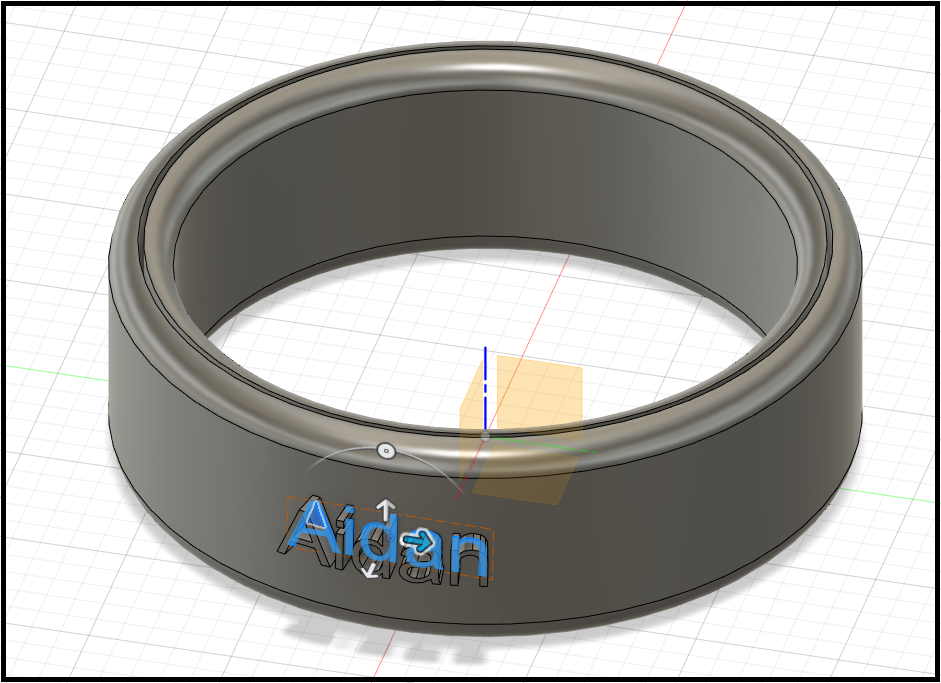
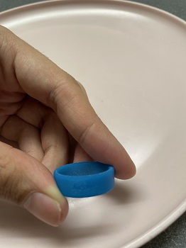

This week we'll be working with the Form 3 Low Force Stereolithography 3D printer alongside Fusion 360 to SLA print complex 3D rings.
SLA printing is a form of 3D digital fabrication that utilizes liquid resin to construct CAD models.
Unlike FDM printing, SLA printing uses light to solidify the material into a solid shape.
Since SLA printers use liquid resin, our class will not be physically utilizing the machines this week.
Instead, a more experienced TA will print our design files for us.

To understand the machine we are using this week, I watched Jacob Loberti's SLA printer tutorial.
I highly recommend watching it if you plan on SLA printing.
Since we did not use the machines ourselves, the tutorial helped visualize the working space and the physical work involved in SLA printing.
The video also reinforced the caution required to utilize an SLA printer safely since we are working with much more dangerous materials this week.
The resolution is less clear when Jacob works with the PreForm software, so I recommend searching for other videos if you cannot follow along with the designing section.
In designing the ring for this week, I became much more familiar with the Fusion 360 software.

I followed this tutorial while making my ring.
The tutorial helped visualize the initial sketches that would allow me to create a 3D ring.
As the tutorial explains, this design incorporates an inner and outer section to create an interlocking 3D ring.

To start, I sketched the two segments and rotated them around the Z-axis to create a 3D object.

Then I used the fillet feature across the whole circumference of the design, forming a much smoother shape for a ring.

I also learned how to add text with the software.
Using this tool, we can attach text to a surface of our model
From here, we can use the emboss feature to extrude the text around the material.
Alternatively, we can engrave the text into the ring.
I personally chose this option since I felt it would make the ring spin more smoothly.

After submitting the file, it was printed and ready within a few days.
The resolution is low, but the engraving came out quite nicely!